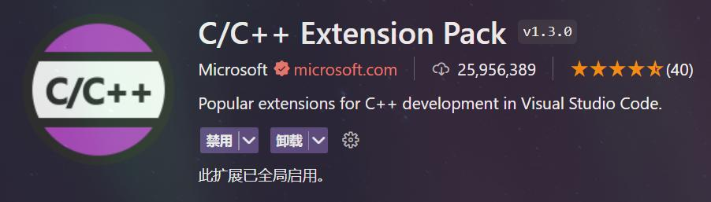
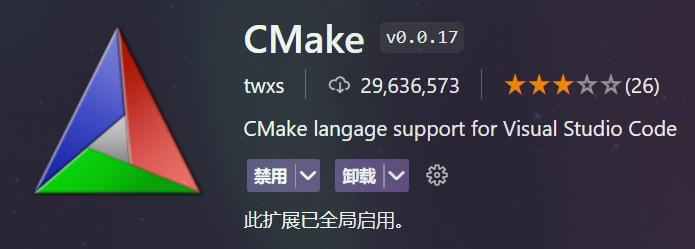
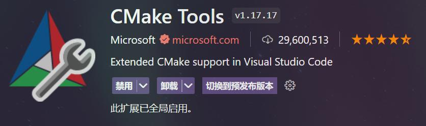

mingw+vcpkg+cmake+vscode c/c++环境配置
苍天保佑, 这个过程总算是圆满结束了
从我两天前冒出一个用c/c++做网络请求的想法(因为可能用得到), 到今天整个环境配置完毕, 花了我两三天的时间. 中间断断续续有超级多的动作, 这里我尽可能详细的把它记录下来.
清单
如标题所示, 我们这次主要需要四样东西:
- (MinGW)[https://github.com/niXman/mingw-builds-binaries/releases] (说起来我好像有段时间没更新了)
- (vcpkg)[https://github.com/Microsoft/vcpkg]
- (CMake)[https://cmake.org/]
- (vscode)[https://code.visualstudio.com/]
其中mingw和vcpkg可以用git clone下载
安装
最简单就是安装cmake, 这玩意有安装向导, 跟着向导走就完了, 最后在测试一下cmake命令是否存在, 有则安装成功
然后就是mingw, 我的安装过程很简单
下载release -> 把压缩包解压到什么地方 -> 把解压文件夹中的bin文件夹加入path环境变量 -> 去命令行中测试有没有gcc命令, 如果有, 则安装成功
再就是vscode, 这玩意也有安装向导, 但是安装完了之后需要再安装几个插件
C/C++ Extension Pack:

它直接包含了c/c++的两个基础扩展
还有就是这个
CMake

和
CMake Tools

最后就是vcpkg, 就这玩意比较复杂, 以下内容摘自Get started with vcpkg
-
克隆仓库
1
git clone https://github.com/Microsoft/vcpkg.git
-
执行引导程序构建vcpkg
克隆完之后在这个文件夹中
1
.\vcpkg\bootstrap-vcpkg.bat
或者你直接找到
bootstrap-vcpkg.bat也可以直接执行
安装基本上也完成了
接下来是最让我难受的地方:
配置
之前我从来没用过cmake和vcpkg, 也就是说我基本就是除了玩一玩标准库和在网上下载的一些比较有意思的 header-only 的东西, 没有想过用c/c++写什么大的东西, 像什么网络请求之类的东西我都用的python, 因为内玩意配置起来真的太方便了, 一条命令的事.
好了闲话少说, 这次我们以安装libcurl为例, 说说要配置什么和怎么配置
先下载库, 如果没有vcpkg, 那么找起来, 说难也没有那么难, 只不过不方便而已. 现在有了vcpkg, 就像python中的pip, 管理起来方便太多了.
因为这次我们用的是mingw-w64编译器, 所以我们要告诉vcpkg下载对应x64-mingw-dynamic版本的库
我们在环境变量中添加这三个变量 (注意这里不是添加到path环境变量!)
1 | VCPKG_DEFAULT_HOST_TRIPLET -> x64-mingw-dynamic |
接下来就可以用这两个命令下载库了:
1 | vcpkg install curl |
之后你可以用
1 | vcpkg list |
查看你已安装的库, 用
1 | vcpkg search [package_name] |
搜索一个包
这个用法真的很像pip (并不是说谁是爷爷谁是孙子, 我说像pip单纯是因为我先接触pip)
然后就是一个最严重的大问题, 我安装完了这个包我该咋用?
这中间我也查了不少资料, 也花了好长时间, 其中有一篇中对于这个问题的拆分我感觉非常合理, 那就是
- 告诉编辑器(即我们这次用的vscode)库在哪
- 告诉编译器/链接器库在哪
第一个问题好解决
在vscode中, 找到c_cpp_properties.json, 打开在其中找到includePath项, 添加一条${VCPKG_ROOT}/installed/x64-mingw-dynamic/include.
这样你的vscode就可以找到你用vcpkg安装的包的头文件了
第二个问题挺变态的, 至少我搞了挺久没搞明白
之前手动编译的时候, 用的指令是这样的:
1 | gcc 源文件 -o 目标文件 |
它只会检查标准库和源文件所在文件夹, 要搜索其他文件夹下的东西, 你就得加个-I
1 | gcc -I 头文件所在位置 源文件 -o 目标文件 |
(好像说这个-I一定要在源文件之前? 确实是这样, 但是为啥我不清楚)
但是光指定头文件不行, 因为libcurl还有lib和dll用于链接, 所以我们还得指定lib的位置, 加个-L
1 | gcc -I 头文件所在位置 -L lib文件所在位置 源文件 -o 目标文件 |
这样还是有问题, 你没指定要用哪个lib库, 所以还得加一个参数-l, 就拿我们这次的libcurl举例子好了
1 | gcc -I 头文件所在位置 -L lib文件所在位置 源文件 -o 目标文件 -lcurl |
直到我把这条命令拼成这个求样子, 编译才算通过. 之前一直有链接器报错未知的符号, 但是当时不知道为啥, 可以一阵难受.
但是也如你所见, 这条命令真的太老太太的裹脚布了. 所以我决定转向一个简单点的方法 – cmake
这一段我甚至没有查出来什么对我有用的简中的文章写, 英文的又不想看, 所以我就直接问Copilot了, 我仿照它的结果和自己的粗浅理解, 最终的CMakeList.txt长这样
1 | cmake_minimum_required(VERSION 3.10) |
这上面也写了, 最终编译就只需要再执行两条命令
1 | cmake -G "MinGW Makefiles" #-DCMAKE_TOOLCHAIN_FILE="%VCPKG_ROOT%\scripts\buildsystems\vcpkg.cmake" |
其中第一条命令中本来应该有内个-D选项的, 但是这玩意可以放到环境变量中, 所以后面就不需要这玩意了
注意第二条命令有个点表示当前文件夹! 别忘了!
至此整个过程终于算是结束了, 可喜可贺可喜可贺🥹
PS
之后我把编译出来的可执行文件放到虚拟机里跑了一下, 发现它并没有把整个库都带进去, 执行的时候还是需要带上对应的dll文件, 比如这次的libcurl.dll(而这玩意又需要libzlib1.dll, 所以一共带上了两个dll文件). 也就是说后期我如果真的想用这套方法写出来点什么东西并发布出来, 可能真的需要一个安装程序了.
我也是才开始玩这些东西, 还有好多要学的, 看后面遇到什么问题了吧.